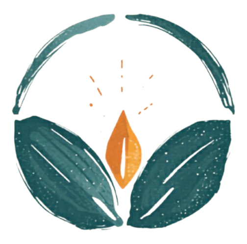

Expand your edges. Keep your spark.
You're seeing this because we trust your perspective. We've been building something and we want you to experience it before it goes anywhere else. This is a prototype — your honest response shapes what this becomes.
Experience the Work
These are complete sessions from the course — not teasers, not highlights. Watch one or both. Let your body respond before your mind decides.
What if desire isn't something to manage or overcome — but your most honest compass? This episode explores the difference between craving and calling, and how your body already knows which is which.
~38 min · Led by BigeYou are not your identity. Identity is what you learned to be. This episode uncovers the veils of insufficiency, separation, and control — and what's underneath them when they drop.
~45 min · Led by GustavoWhat This Becomes
Recognition Rites is a guided exploration of awareness, embodiment, and what it means to experience life as a sacred game — not something to win, but something to participate in fully. Through nervous system literacy, psychological precision, and embodied practice, we restore coherence between mind, body, and perception.
The course follows a hidden rhythm — five phases that move from awakening through stabilizing, dissolving, integrating, and finally embodiment. You won't need to know the architecture to feel it working.
Weeks 1–3
Return to the body. Discover the orchestra within. Begin removing the lenses that filter reality before you feel it.
Weeks 4–6
Learn your nervous system's terrain. Reclaim desire as navigation. Discover that ease is intelligence, not laziness.
Weeks 7–9
Let the old self die. Integrate your shadow. Walk through the doorway where you're most afraid to go.
Weeks 10–11
Bring this into relationship. Find your inner authority. Live from your own north star.
Week 12
You are the medicine. Life is the ritual. Playfulness as spiritual maturity.
The Experience Includes
Weekly video teachings — 30–40 min of concept, story, and direct transmission
Guided somatic practices — 20–30 min of movement, breath, and embodied exploration
Integration prompts — journaling, micro-practices, and real-life experiments
Weekly community circle — 90 min live, facilitated sharing and nervous system co-regulation
Private community — ongoing connection, support, and practice between sessions
Optional 1-on-1 coaching — personal space holding with Gus or Bige
This is not self-improvement. It's a shift in how you meet life. From seriousness to sincerity. From effort to curiosity. From surviving the game to realizing you were always allowed to play.
We're not looking for polite encouragement. We want to know what landed, what didn't, and what your body felt. As a thank-you for going deep with us, we'll share something back.
Share Your Response